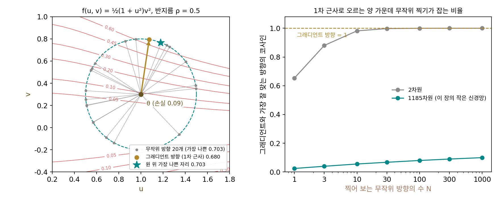
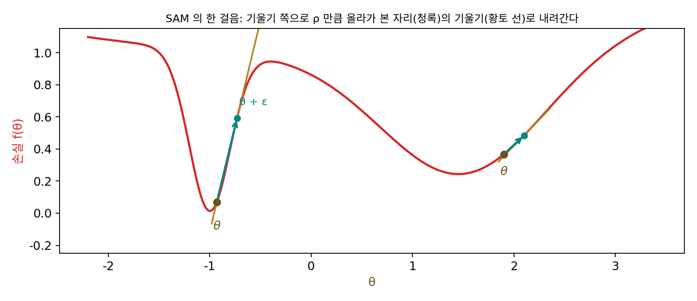
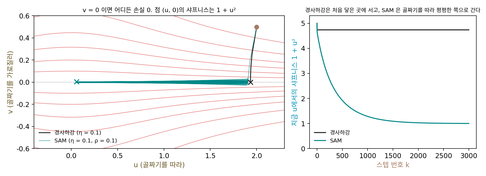
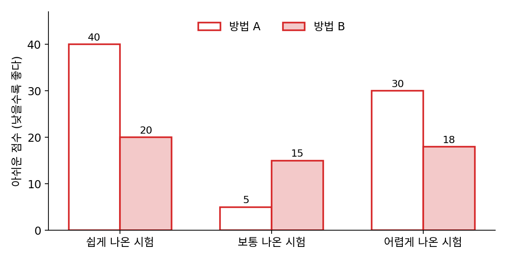
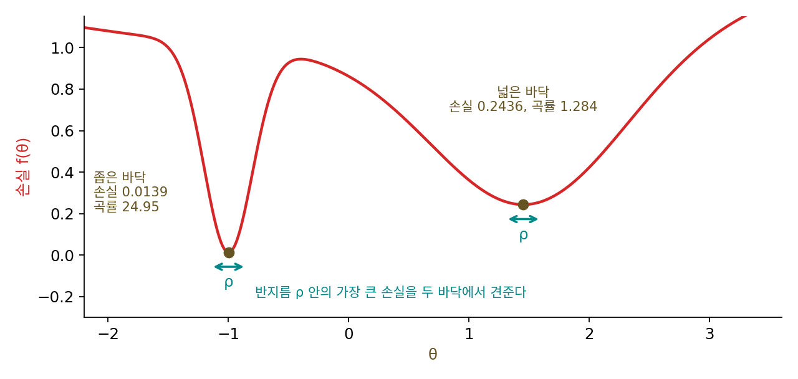
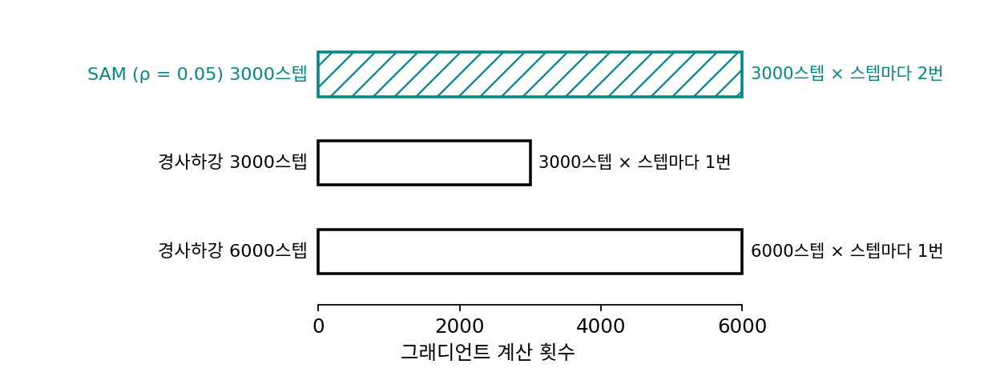

SAM: 샤프니스를 깎는 학습
학습률은 샤프니스가 2/η보다 큰 바닥을 걸러 냈지만, 이 거름은 거칠다. 2/η보다 덜 날카로운 바닥이라면 샤프니스가 2/η의 절반이든 십분의 일이든 가리지 않고 처음 닿은 곳에 멈춘다. 평평한 바닥을 원한다면 학습률이 걸러 주기를 기다리지 말고 샤프니스 자체를 줄이는 쪽으로 걸을 수는 없을까? 샤프니스를 손실에 페널티로 더하면 될 것 같지만, 스텝마다 샤프니스를 재려면 파워 이터레이션을 여러 번 돌려야 하고, 샤프니스의 그래디언트까지 구하려면 3차 미분이 든다. 더 값싼 길은 없을까?
역사: 둘레의 가장 나쁜 손실을 줄인다
케스카르와 동료들은 샤프니스를 「바닥 둘레 작은 상자 안에서 손실이 가장 크게 오르는 값」으로 쟀다. 구글 리서치의 피에르 포레(Pierre Foret), 아리엘 클라이너(Ariel Kleiner), 호세인 모바히(Hossein Mobahi)와 구글의 모회사 알파벳의 연구팀 블루시프트(Blueshift)에 있던 베남 네이샤부르(Behnam Neyshabur)는 이 재는 법을 학습의 목표로 바꿨다. 그들의 논문 「일반화를 효율적으로 높이는 샤프니스를 의식한 최소화」는 2020년 10월에 원고로 나왔고 2021년 국제 표현 학습 학회에서 발표되었다. 파라미터 둘레 반지름 ρ(로, rho) 안에서 손실이 가장 큰 값을 줄이면, 바닥 자체가 낮을 뿐 아니라 둘레까지 고르게 낮은 곳을 찾게 된다. 그들은 이 생각이 호흐라이터와 슈미트후버의 평평한 극소에서 왔다고 적었다.
가장 큰 값을 제대로 찾는 일은 그 자체로 최적화 문제다. 그들은 손실을 1차까지 근사해 「반지름 ρ 안에서 손실을 가장 많이 올리는 방향은 그래디언트 방향」으로 놓고, 그래디언트를 길이 ρ로 맞춘 만큼 올라가 본 자리에서 그래디언트를 다시 구해 그것으로 걷게 했다. 이 그래디언트를 정확히 미분하면 2차 항이 생기는데, 계산을 줄이려고 그 항은 버렸다. 그래서 한 스텝에 역전파가 두 번 든다. 반지름은 0.01부터 0.5까지 몇 값을 시험해 0.05를 「든든한 기본값」으로 권했다. 그들은 이 방법을 SAM이라 불렀고, CIFAR-10, CIFAR-100, 이미지넷과 파인튜닝 태스크에서 일반화가 좋아졌다고 보고했다.


반지름 ρ 안에서 손실이 가장 큰 자리를 찾으면 된다니, 그 안을 다 뒤져 보면 되는 거 아니에요?

이 장의 작은 신경망만 해도 1185차원이에요. 민준 학생이라면 어떻게 뒤질 거예요?

무작위 방향을 몇백 개 찍어서… 아, 그걸 스텝마다 해야 하네요.

음, 찍어도 잘 안 맞을 것 같아. 처음 헤시안의 고윳값은 81%가 0.01도 안 됐잖아. 무작위로 찍으면 거의 다 평평한 방향이고, 가파른 방향은 잘 안 걸려.

그래서 포레와 동료들은 뒤지지 않았어요. 손실을 1차까지 근사하면 가장 많이 오르는 방향은 그래디언트 방향 하나로 정해지니까, 그 방향으로 ρ만큼 한 번만 올라가 봤어요.

그래도 올라가 본 자리에서 그래디언트를 또 구하니까 역전파가 스텝마다 두 번이네요. 학습이 두 배 느려지는 걸 감수한 거고요.
그 그래디언트를 정확히 미분하면 생기는 2차 항까지 넣었다면 더 비쌌겠죠. 그 항은 버렸어요.

한 번만 올라가 보고 2차 항까지 버렸는데, 그 그래디언트로 걸으면 정말 날카로운 바닥에서 밀려나요?
올라가 보고 내려가기
골짜기 둘인 손실에서 SAM의 한 스텝을 따라가 보면, 먼저 파라미터 θ에서 그래디언트 쪽(손실이 오르는 쪽)으로 ρ만큼 올라가 본다. 좁은 골짜기의 바닥 근처라면 조금만 올라가도 벽이 가팔라서 올라가 본 자리 θ + ε의 그래디언트가 크다. 넓은 골짜기라면 올라가 본 자리의 그래디언트도 작다. 그 그래디언트로 원래 자리 θ에서 걸으면, 좁은 골짜기는 제자리의 그래디언트가 거의 0이어도 크게 밀려나고 넓은 골짜기는 조금만 밀린다.

SAM의 스텝이 샤프니스를 정말 깎는지 보려면, 바닥이 점 하나가 아니라 샤프니스가 다른 바닥들이 줄지어 이어진 손실이 좋다. 큰 신경망의 바닥이 그렇다. 바꿔 쓰기 문제에서 손실이 0인 파라미터가 곡선 하나를 이룬 것처럼, 파라미터가 데이터보다 많으면 손실이 가장 작은 자리가 넓게 이어진다. 그 가장 작은 꼴로 f(u, v) = ½(1 + u²)v²를 보자. v = 0이면 u가 무엇이든 손실이 0이고, 점 (u, 0)의 샤프니스는 1 + u²다. u = 2인 곳은 샤프니스 5, u = 0인 곳은 1이다.
(2, 0.5)에서 학습률 0.1로 경사하강을 하면 열 스텝 만에 u = 1.9333, 손실 1.37 × 10⁻⁶에 닿고, 그 뒤로는 u = 1.9333에 선다. u = 1.9333은 샤프니스 4.738인 바닥이고, 바닥에서는 그래디언트가 0이니 경사하강이 더 움직이지 않는다. 같은 학습률로 SAM(ρ = 0.1)을 하면 u가 10, 100, 1000, 3000스텝에서 1.8841, 1.6337, 0.5333, 0.0572로 골짜기를 따라 계속 흘러가, 10000스텝째에는 0.0000에 이르고 샤프니스는 1.000이 된다. ρ = 0.05면 더 느려서 10000스텝째 0.1001, ρ = 0.2면 빨라서 1000스텝째 0.0185다. 손실은 0까지 가지 않는다. ρ = 0.1이면 v가 0.0053 언저리에서 오가며 손실이 1.39 × 10⁻⁵에 머문다. 올라가 본 자리의 그래디언트로 걸으니 바닥 자체에는 정확히 앉지 않는 것이다.
이렇게 파라미터 둘레 반지름 ρ 안의 가장 큰 손실을 줄이려고, 그래디언트 쪽으로 ρ만큼 올라가 본 자리의 그래디언트로 걷는 방법을 SAM (샤프니스를 의식한 최소화 / sharpness-aware minimization)이라 한다.
왜 SAM의 스텝이 샤프니스를 줄이는 쪽으로 흐를까? 바닥 근처에서 손실을 2차까지 근사하면 둘레 반지름 ρ 안의 가장 큰 손실은 바닥의 손실에 ½ρ²·(샤프니스)를 더한 값과 비슷하다. 그래서 SAM이 줄이는 값에는 샤프니스가 ρ²의 무게로 들어 있다. 샤프니스를 직접 재지 않고도, 올라가 본 자리의 그래디언트 하나가 그 무게만큼 샤프니스를 깎는 방향을 품고 있는 것이다.

ML에서: 그래디언트 두 번의 값과 크기에 흔들리지 않는 SAM
이 장의 작은 신경망을 학습률 0.05로 3000스텝 학습하며 경사하강과 SAM을 비교했다.
| 방법 | 손실 | 샤프니스 (k = 1000, 3000) | 그래디언트 계산 |
|---|---|---|---|
| 경사하강 | 0.00745 | 17.66, 25.43 | 3000번 |
| SAM ρ = 0.02 | 0.01032 | 14.08, 13.18 | 6000번 |
| SAM ρ = 0.05 | 0.01342 | 8.67, 7.14 | 6000번 |
| SAM ρ = 0.1 | 0.01636 | 5.46, 4.49 | 6000번 |
경사하강의 샤프니스는 점점 날카로워짐을 따라 25.43까지 오르는데, SAM은 처음 10.07보다도 낮은 곳으로 내려가고 ρ가 클수록 더 낮다. 대신 같은 스텝 수에서 학습 손실은 더 높고 그래디언트 계산은 두 배여서, SAM은 학습 손실을 조금 내주고 평평함을 사는 방법이다.
딘과 동료들의 반론은 SAM에도 그대로 걸린다. 반지름 ρ인 둥근 둘레는 파라미터의 크기를 보지 않으므로, 함수는 같고 파라미터의 배율만 다른 두 신경망에서 SAM이 재는 샤프니스가 달라진다. 삼성 글로벌 AI 센터의 권정민(Jungmin Kwon)과 동료들은 2021년 국제 기계학습 학회 논문 「ASAM: 크기에 흔들리지 않는 학습을 위한 적응형 샤프니스 의식 최소화」에서 둘레의 크기를 파라미터마다 그 크기에 맞춰 늘이고 줄여, 배율을 바꿔도 같은 값이 나오는 샤프니스를 쓰자고 했다.
문제 10. 가장 나쁜 경우로 공부 방법 고르기
시험이 쉽게, 보통으로, 어렵게 나올 수 있다. 공부 방법 A로 준비하면 아쉬운 점수(만점에서 깎인 점수)가 세 경우 각각 40, 5, 30점이고, 방법 B면 20, 15, 18점이다. 「보통」이 나올 가능성이 가장 크다고들 한다. (가) 보통 시험만 보고 고르면? (나) 세 경우의 평균으로 고르면? (다) 세 경우 가운데 가장 나쁜 경우로 고르면? 이 가운데 SAM과 닮은 것은?

보통이 제일 잘 나온다니까 보통에서 5점밖에 안 깎이는 A죠.
평균은 A가 25점, B가 17.67점이야. 평균으로도 B가 나아.
시험이 예상보다 조금만 쉽거나 어렵게 나오면 A는 어떻게 되죠?
40점이나 30점이 깎여요. 보통에만 맞춰 판 거라 조금만 비껴가도 크게 무너지네요. 가장 나쁜 경우로 보면 A는 40, B는 20이라 B가 두 배 낫고요.

(다)가 SAM이에요. 「보통」이 지금 자리 θ고, 쉽게·어렵게 나오는 게 둘레 반지름 ρ 안의 다른 자리예요. 지금 자리의 손실만 보면 A가 이기지만, 둘레의 가장 나쁜 손실로 보면 B가 이겨요. 좁은 골짜기 바닥이 A, 넓은 골짜기 바닥이 B고요.

조교님이 기출 한 회만 외우지 말고 앞뒤 회차도 풀어 보라고 한 게 이 얘기였네요.
문제 11. 반지름이 얼마여야 넓은 골짜기가 이기나
골짜기 둘인 손실에서 좁은 바닥은 손실 0.0139·곡률 24.95, 넓은 바닥은 손실 0.2436·곡률 1.284다. SAM이 줄이는 값 max|ε|≤ρ f(θ* + ε)를 두 바닥에서 견준다. (가) 2차 근사 f(θ*) + ½ρ²·(곡률)으로 두 값이 같아지는 ρ는? (나) 실제 손실로 계산한 값은 ρ = 0.1에서 좁은 0.1319, 넓은 0.2500이고, ρ = 0.15에서 좁은 0.2609, 넓은 0.2581, ρ = 0.2에서 좁은 0.4117, 넓은 0.2693이다. 2차 근사와 어떻게 다른가? (다) SAM의 ε는 바닥 θ*에서 어떻게 정해지는가?

(가)는 0.0139 + 12.475ρ² = 0.2436 + 0.642ρ²를 풀면 ρ = 0.1393이에요. 반지름이 0.14보다 크면 넓은 골짜기가 이기네요.
(나)의 ρ = 0.15에서는 어느 쪽이 작죠?
좁은 0.2609, 넓은 0.2581이라 넓은 쪽이 겨우 이겨요. 그런데 2차 근사대로면 ρ = 0.15에서 좁은 쪽이 0.2945였을 텐데 실제는 0.2609로 더 작아요.
그럼 실제로 같아지는 ρ는요?
찾아보니 0.1489예요. 근사로 구한 0.1393보다 조금 커요.
좁은 골짜기의 벽이 위로 갈수록 완만해져서 2차 근사보다 덜 올라가는 것 같아. ρ = 0.2면 2차 근사는 0.5129인데 실제는 0.4117이야.
넓은 골짜기는요? 2차 근사는 언제 믿을 수 있을까요?
넓은 골짜기는 2차 근사와 거의 같아요. 그럼 반지름이 바닥의 폭보다 작을 때만 믿을 수 있겠네요. 좁은 골짜기는 폭이 0.128이라 ρ = 0.1만 돼도 이미 폭에 가까워요.

(다)를 볼까요? ε = ρ·∇f/|∇f|인데 바닥에서는 ∇f = 0이에요.
0을 0으로 나누게 돼서… 방향이 정해지지 않아요. 바닥에 꼭 맞게 앉으면 올라가 볼 방향이 없는 거예요. 수업에서 정의역의 한 점을 빼고 극한을 정의하던 게 떠올라요.
실제 코드는 분모에 아주 작은 수를 더해 두던데. 그럼 SAM은 바닥에서 어떻게 움직여?
극소가 이어진 골짜기에서 v가 어떻게 움직였는지 떠올려 보세요.
0.0053 언저리에서 오갔어요. 아, SAM은 바닥에 정확히 앉기보다 바닥 둘레에서 오가고, 그 오감 속에서 올라가 본 자리의 그래디언트가 날카로운 쪽을 밀어내는 거네요.

반지름은 그냥 0.05로 두면 되는 줄 알았는데, 바닥의 폭과 견줘야 뜻이 있는 숫자네요. 파라미터의 크기를 바꾸면 폭도 바뀌니까 ASAM이 왜 나왔는지도 알겠어요.
문제 12. 같은 계산 횟수로 비교하면
작은 신경망을 학습률 0.05로 학습한다. SAM(ρ = 0.05) 3000스텝은 그래디언트 계산 6000번에 손실 0.01342, 샤프니스 7.14다. 경사하강 3000스텝은 손실 0.00745, 샤프니스 25.43이고, 경사하강 6000스텝은 손실 0.00459, 샤프니스 33.39다. (가) 같은 계산 횟수로 견주면 학습 손실은 어느 쪽이 낮은가? (나) 그렇다면 SAM은 왜 쓰는가? (다) 경사하강을 더 오래 하면 샤프니스는 어디까지 오를까?

SAM이 샤프니스를 7.14까지 낮췄으니 더 좋은 학습이죠. 손실이 좀 높은 건 반지름 때문이고요.
같은 계산 6000번을 경사하강에 주면 손실은요?
0.00459요. SAM의 0.01342보다 세 배 가까이 낮아요. 학습 손실만 보면 SAM은 손해예요.
대신 샤프니스는 경사하강이 33.39로 SAM의 네 배가 넘어. (다)는 학습률이 0.05니까 2/η = 40까지 오르다가 거기 붙겠지. 학습률 여섯 가지로 학습했을 때 2/η = 40은 6000스텝 안에 아직 안 닿았었어.
그러면 SAM을 쓸지는 무엇으로 정해야 할까요?
학습 손실이 아니라, 평평한 바닥이 처음 보는 데이터에서 더 낫냐로 정해야 해요. 포레와 동료들은 그렇다고 보고했지만, 딘과 동료들 말처럼 샤프니스는 파라미터를 적는 방식에 따라 바뀌니까 조건을 따져 봐야 해요. 학습 손실이 낮다는 것만으로 좋은 해라고 할 수 없다는 건 함수 근사 수업에서 오버피팅으로 배운 거고요.
연습 문제집 점수만 올리는 공부랑 시험장에서 통하는 공부가 다를 수 있는 거네요. 같은 시간을 써도 무엇을 재느냐에 따라 승자가 바뀌어요.